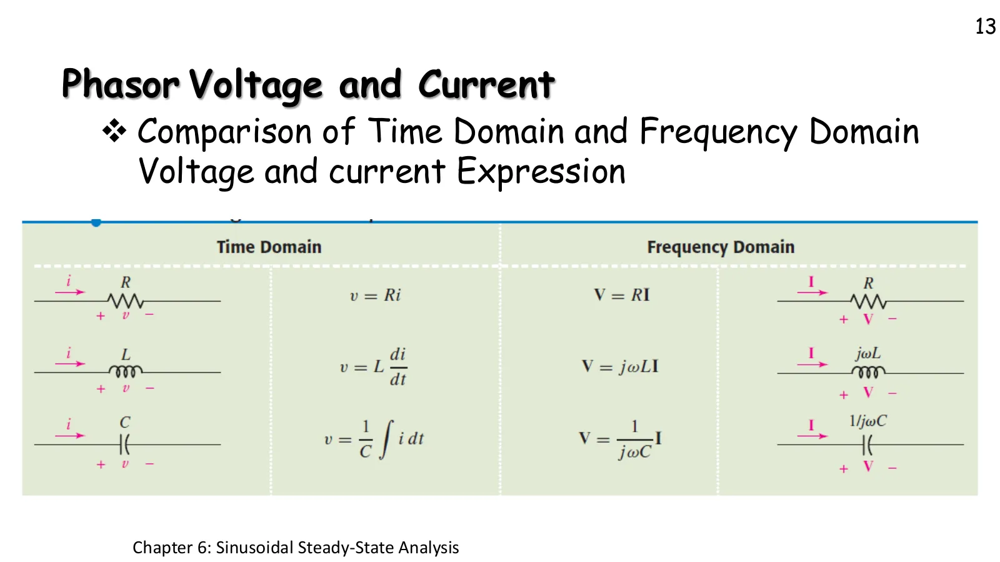
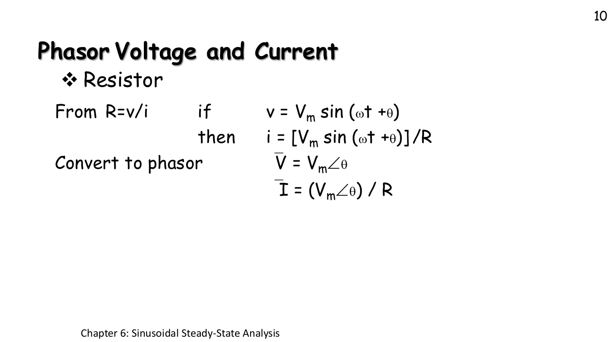
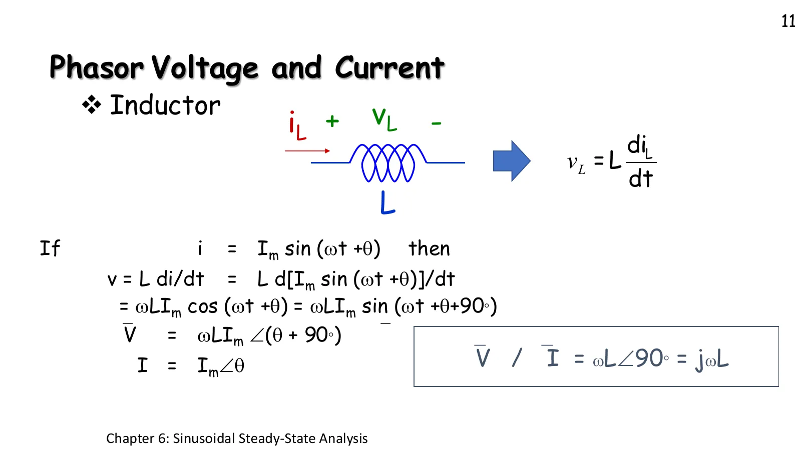
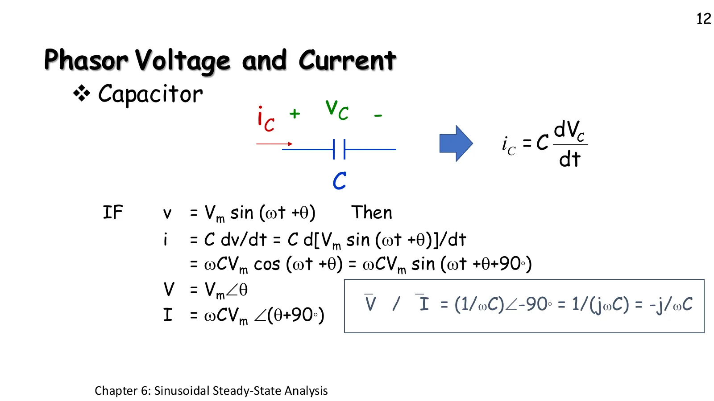

ในโดเมนเวลา ตัวเหนี่ยวนำมีกฎ \(v = L\,di/dt\) และตัวเก็บประจุมีกฎ \(i = C\,dv/dt\) ซึ่งเป็นอนุพันธ์ทั้งคู่ แต่อนุพันธ์ของคลื่นไซน์คือคลื่นไซน์ความถี่เดิมที่ใหญ่ขึ้น \(\omega\) เท่าและเลื่อนไป 90° ในภาษาเฟเซอร์คือการคูณด้วย \(j\omega\) อุปกรณ์ทั้งสามจึงทำตามกฎหน้าตาเดียวกับกฎของโอห์ม \(\mathbf{V} = Z\,\mathbf{I}\) (สไลด์หน้า 13 ผู้สอนเขียนกำกับว่า Ohm's law) หน้านี้มีภาพจำลองให้ลองอุปกรณ์ทีละตัว (ส่วน A) โจทย์ในห้องสามข้อ ตามสไลด์หน้า 10–12 โจทย์จากตำราหนึ่งข้อ กราฟรีแอกแตนซ์ตามความถี่ (ส่วน B) และตารางสรุป (ส่วน C)
In the time domain an inductor obeys \(v = L\,di/dt\) and a capacitor \(i = C\,dv/dt\): both are derivatives. But the derivative of a sinusoid is a sinusoid of the same frequency, \(\omega\) times larger and shifted by 90°, which in phasor language is multiplication by \(j\omega\). So all three elements obey a rule shaped like Ohm's law, \(\mathbf{V} = Z\,\mathbf{I}\) (on slide p. 13 the teacher wrote "Ohm's law" beside it). This page has a simulation to try the elements one at a time (section A), the three class problems of slides pp. 10–12, one textbook problem, the reactance against frequency (section B) and the summary table (section C).
เครื่องหมาย + − และลูกศร \(i\) บนอุปกรณ์คือทิศอ้างอิงแบบพาสซีฟ (กระแสไหลเข้าขั้ว +) เหมือนในสไลด์ ดูสามอย่างพร้อมกัน: จุดในสายไฟ (กระแสจริงขณะนั้น) ลูกศรเฟเซอร์ \(\mathbf{V}\) สีฟ้ากับ \(\mathbf{I}\) สีเหลือง และรูปคลื่นที่มีสามเหลี่ยมบอกยอดแรกของแต่ละเส้น เลือก L แล้วสังเกตว่าจุดในสายวิ่งเร็วที่สุดตอนที่แรงดันเป็นศูนย์
The + − marks and the arrow \(i\) on the element are the passive sign convention (current enters the + terminal), as on the slides. Watch three things at once: the dots in the wire (the actual current at that instant), the phasor arrows \(\mathbf{V}\) (blue) and \(\mathbf{I}\) (yellow), and the waveforms, where triangles mark each curve's first peak. Choose L and notice that the dots run fastest when the voltage is zero.

ตัวต้านทานไม่มีอนุพันธ์ กระแสจึงเป็นแรงดันหารด้วย R ทุกขณะ คลื่นทั้งสองมีมุมเดียวกัน
There is no derivative in a resistor: the current is the voltage divided by R at every instant, so both waves have the same angle.

อนุพันธ์ของ sin คือ cos ซึ่งคือ sin ที่เลื่อนไป 90° แรงดันจึงใหญ่ขึ้น \(\omega L\) เท่าและนำหน้ากระแส 90°
The derivative of sin is cos, which is a sine shifted by 90°: the voltage is \(\omega L\) times larger and 90° ahead of the current.

คราวนี้กระแสคืออนุพันธ์ของแรงดัน กระแสจึงนำหน้าแรงดัน 90° และ \(1/j = j/j^2 = -j\) เพราะ \(j^2 = -1\)
This time the current is the derivative of the voltage, so the current leads the voltage by 90°, and \(1/j = j/j^2 = -j\) because \(j^2 = -1\).
ขนาดของ \(Z\) ของตัวต้านทานไม่ขึ้นกับความถี่ แต่ \(\omega L\) เป็นเส้นตรงที่ชันขึ้น และ \(1/(\omega C)\) เป็นเส้นโค้งที่ลดลง ตัวเหนี่ยวนำต้านการเปลี่ยนแปลงเร็ว ๆ ส่วนตัวเก็บประจุยอมให้การเปลี่ยนแปลงเร็ว ๆ ผ่าน เส้นแนวตั้งคือ \(\omega\) ปัจจุบัน ลองเลื่อน \(\omega\) ในส่วน A แล้วดูขนาดของ \(\mathbf{V}\) เปลี่ยนตาม
A resistor's \(|Z|\) does not depend on frequency, but \(\omega L\) is a rising straight line and \(1/(\omega C)\) a falling curve. An inductor opposes fast changes; a capacitor lets fast changes through. The vertical line is the present \(\omega\). Slide \(\omega\) in section A and watch the size of \(\mathbf{V}\) follow.
| อุปกรณ์ | โดเมนเวลา | โดเมนความถี่ (เฟเซอร์) | อิมพีแดนซ์ \(Z = \mathbf{V}/\mathbf{I}\) | มุมของ V เทียบกับ I |
|---|---|---|---|---|
| R | \(v = Ri\) | \(\mathbf{V} = R\mathbf{I}\) | \(R\) | 0° (เฟสเดียวกัน) |
| L | \(v = L\dfrac{di}{dt}\) | \(\mathbf{V} = j\omega L\,\mathbf{I}\) | \(j\omega L = \omega L\angle 90^\circ\) | +90° (V นำหน้า) |
| C | \(v = \dfrac{1}{C}\displaystyle\int i\,dt\) | \(\mathbf{V} = \dfrac{1}{j\omega C}\mathbf{I}\) | \(\dfrac{-j}{\omega C} = \dfrac{1}{\omega C}\angle{-90^\circ}\) | −90° (I นำหน้า) |
| Element | Time domain | Frequency domain (phasor) | Impedance \(Z = \mathbf{V}/\mathbf{I}\) | Angle of V relative to I |
|---|---|---|---|---|
| R | \(v = Ri\) | \(\mathbf{V} = R\mathbf{I}\) | \(R\) | 0° (in phase) |
| L | \(v = L\dfrac{di}{dt}\) | \(\mathbf{V} = j\omega L\,\mathbf{I}\) | \(j\omega L = \omega L\angle 90^\circ\) | +90° (V leads) |
| C | \(v = \dfrac{1}{C}\displaystyle\int i\,dt\) | \(\mathbf{V} = \dfrac{1}{j\omega C}\mathbf{I}\) | \(\dfrac{-j}{\omega C} = \dfrac{1}{\omega C}\angle{-90^\circ}\) | −90° (I leads) |
อ่านแถวละตัว: อนุพันธ์ \(d/dt\) กลายเป็น \(j\omega\) และปริพันธ์ \(\int dt\) กลายเป็น \(1/(j\omega)\) คอลัมน์โดเมนความถี่จึงเป็นกฎของโอห์มทั้งหมด มุมของ \(Z\) คือมุมที่ \(\mathbf{V}\) นำหน้า \(\mathbf{I}\) เสมอ เพราะ \(\angle\mathbf{V} = \angle Z + \angle\mathbf{I}\)
Read it row by row: the derivative \(d/dt\) becomes \(j\omega\) and the integral \(\int dt\) becomes \(1/(j\omega)\), so the frequency-domain column is all Ohm's law. The angle of \(Z\) is always the angle by which \(\mathbf{V}\) leads \(\mathbf{I}\), because \(\angle\mathbf{V} = \angle Z + \angle\mathbf{I}\).